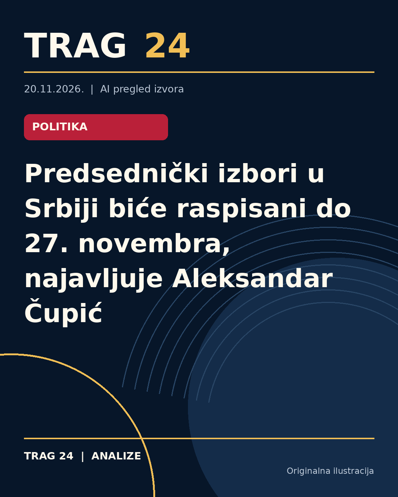

Predsednički izbori u Srbiji biće raspisani do 27. novembra, najavljuje Aleksandar Čupić

ŠTA SE DOGODILO
Aleksandar Čupić, predsednik Skupštine Srbije i vršilac dužnosti predsednika Republike, najavio je da će predsednički izbori biti raspisani u narednih nekoliko dana, najkasnije do 27. novembra 2023. godine. Ova najava usledila je nakon što je prethodni predsednik, Aleksandar Vučić, podneo ostavku 27. septembra ove godine.
HRONOLOGIJA
Aleksandar Vučić dao je ostavku na predsedničku funkciju 27. septembra 2023. Prema Zakonu o predsedniku Republike Srbije, izbori moraju biti održani najkasnije tri meseca od prestanka mandata. Čupić je za FoNet izjavio da će izbori biti raspisani najkasnije do 27. novembra, a od dana raspisivanja zakonski je predviđeno da mora proteći između 30 i 60 dana do dana glasanja. Izborna procedura, kako je najavljeno, neće biti obavljena isti dan kada je dato saopštenje, već u narednim danima nakon najave.
ŠTA NAVODE IZVORI
Sva tri izvora - Vreme, Novosti i Nova.rs - izveštavaju o izjavi Aleksandra Čupića u kojoj potvrđuje da su predsednički izbori u zakonskom roku i najkasnije do 27. novembra. Čupić navodi da je rok za raspisivanje veoma kratak i da još nije doneo odluku neposredno na dan izjave. Podsećaju i da je po zakonu između dana raspisivanja i glasanja minimalni rok od 30, a maksimalni od 60 dana. Izvori se slažu u osnovnim činjenicama i terminima vezanim za raspisivanje izbora.
ŠTA JE POTVRĐENO
Potvrđeno je da Aleksandar Čupić obavlja funkciju vršioca dužnosti predsednika, da je Vučić podneo ostavku 27. septembra, da prema zakonu izbori moraju biti održani u roku od tri meseca od prestanka mandata, i da će izbori biti raspisani najkasnije do 27. novembra 2023. Takođe, potvrđeno je pravno određenje vremena između dana raspisivanja i dana glasanja koje mora biti u rasponu od 30 do 60 dana.
ŠTA NIJE POTVRĐENO
Nije potvrđeno tačno kada će tačno biti raspisani izbori, jer je Čupić izjavio da to neće biti danas već u narednim danima. Nema informacija o datumu održavanja samih izbora niti o potencijalnim kandidatima ili kampanji. Takođe, nije potvrđena odluka ili procedura koju će pratiti Skupština ili drugi državni organi u vezi sa raspisivanjem izbora.
ŠTA OSTАJE OTVORENO: Ostaje otvoreno pitanje preciznog datuma raspisivanja izbora i daljih koraka u izbornoj proceduri. Takođe, nije poznato ko će se kandidovati na predsedničkim izborima, kao ni političke okolnosti koje će pratiti predstojeće izbore. Javnost još uvek ne zna detalje o izbornom procesu ili mogućim promenama u sistemu koji mogu uticati na kampanju i sam izborni dan.
Izvori
- https://vreme.com/razno/cupic-predsednicki-izbori-bice-raspisani-u-narednih-nekoliko-dana/
- https://www.novosti.rs/vesti/politika/1673009/aleksandar-cupic-predsednicki-izbori-srbija-najnovije-vesti
- https://nova.rs/vesti/politika/cupic-predsednicke-izbore-raspisacu-za-nekoliko-dana/
Ova analiza je pripremljena uz pomoć veštačke inteligencije na osnovu javno dostupnih izvora. Navodi izvora nisu nužno nezavisno potvrđeni.